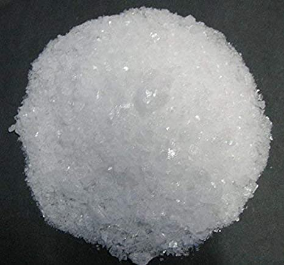

Pada artikel kali ini saya akan memberikan sedikit contoh senyawa kimia
Senyawa adalah zat yang dibentuk oleh dua unsur atau lebih. Melalui reaksi kimia, senyawa dapat diuraikan menjadi unsur-unsur pembentuknya.
Contoh senyawa:
Sesungguhnya air yang cair itu adalah kumpulan molekul H2O. Dalam dunia kimia dikenal H sebagai atom hidrogen dan O sebagai atom oksigen. Jadi H2O adalah satu molekul air yang mengandung satu atom oksigen dan 2 atom hidrogen.

Perak nitrat (AgNO3) merupakan senyawa organik yang bisa menjadi prekursor serbaguna untuk banyak senyawa perak lainnya. Hal ini disebabkan karena senyawa ini relatif stabil terhadap cahaya, sehingga bisa larut dalam banyak pelarut, termasuk air.
Asam sulfat, H2SO4, merupakan asam mineral (anorganik) yang kuat. Zat ini larut dalam air pada semua perbandingan.
Nama : Salih Arya Gumilang
NIM : 2100018438
Kelas : I